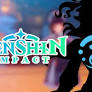
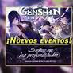
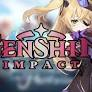
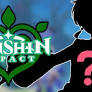
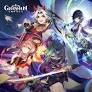
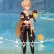

Filtradores hablan de un nuevo personaje de Genshin Impact

Genshin Impact anuncia más eventos y gachapón de la v2.7

Se ha filtrado la imagen principal de la 2.8

Se filtra información sobre el posible primer personaje Dendro

códigos con Protogemas gratis, monedas Mora y experiencia

fechas y cómo jugar al evento Sublime y Glorioso Gran Festival de Tambores de Arataki
Se ha filtrado la imagen principal de la 2.8
Se filtra información sobre el posible primer personaje Dendro